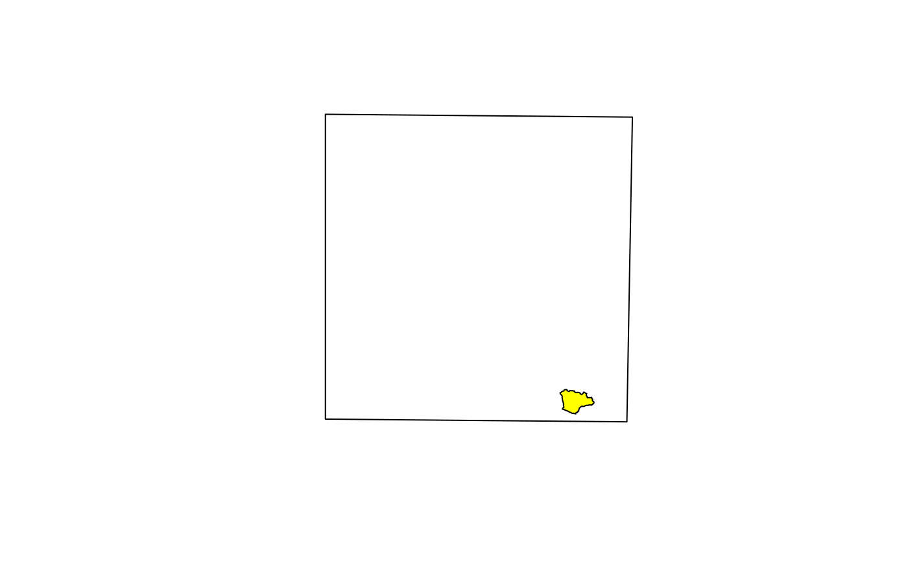
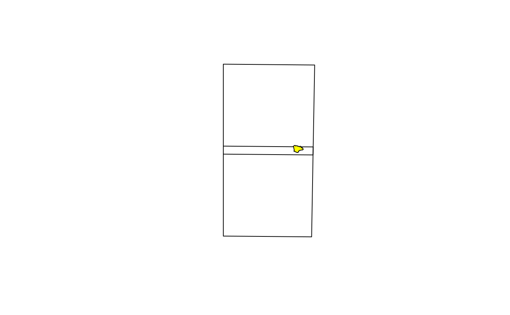

Function which returns the tile IDs of the Sentinel-2 tiles which overlap a provided extent.
tiles_intersects(extent, all = FALSE, out_format = "id", .s2tiles = NULL)sf object with the spatial extent.
logical: if TRUE, all the tiles overlapping the extent are provided; if FALSE (default), unnecessary tiles are skipped. Unnecessary tiles are tiles which overlaps the extent for an area already covered by another tile. In case the extent is all included in an overlapping area, only one of the two candidate tiles is returned (the first in alphabetical order).
character: if "sf", the spatial object of the overlapping tiles is returned; if "id" (default), a character vector with the tile IDs.
output of s2_tiles() function (it is possible to pass it
in order to speed up the execution;
otherwise leave to NULL and it will be generated within the function).
the tiles intersecting the extent (see argument out_format).
License: GPL 3.0
L. Ranghetti, M. Boschetti, F. Nutini, L. Busetto (2020). "sen2r": An R toolbox for automatically downloading and preprocessing Sentinel-2 satellite data. Computers & Geosciences, 139, 104473. doi:10.1016/j.cageo.2020.104473 , URL: https://sen2r.ranghetti.info/.
# \donttest{
ex_extent <- sf::st_read(
system.file("extdata/vector/scalve.kml", package = "sen2r"),
quiet = TRUE
)
ex_extent <- ex_extent[1,]
# Tile ID of the required S2 tile
tiles_intersects(ex_extent)
#> Spherical geometry (s2) switched off
#> old-style crs object detected; please recreate object with a recent sf::st_crs()
#> old-style crs object detected; please recreate object with a recent sf::st_crs()
#> Spherical geometry (s2) switched on
#> [1] "32TNS"
# Tile ID of all the overlapping S2 tiles
tiles_intersects(ex_extent, all = TRUE)
#> Spherical geometry (s2) switched off
#> old-style crs object detected; please recreate object with a recent sf::st_crs()
#> old-style crs object detected; please recreate object with a recent sf::st_crs()
#> Spherical geometry (s2) switched on
#> [1] "32TNR" "32TNS"
# Spatial object with the required tile
sel_tiles <- tiles_intersects(ex_extent, out_format = "sf")
#> Spherical geometry (s2) switched off
#> old-style crs object detected; please recreate object with a recent sf::st_crs()
#> old-style crs object detected; please recreate object with a recent sf::st_crs()
#> Spherical geometry (s2) switched on
plot(sf::st_geometry(sel_tiles)); plot(sf::st_geometry(ex_extent), add=TRUE, col="yellow")

# Spatial object with the overlapping S2 tiles
sel_tiles <- tiles_intersects(ex_extent, all = TRUE, out_format = "sf")
#> Spherical geometry (s2) switched off
#> old-style crs object detected; please recreate object with a recent sf::st_crs()
#> old-style crs object detected; please recreate object with a recent sf::st_crs()
#> Spherical geometry (s2) switched on
plot(sf::st_geometry(sel_tiles)); plot(sf::st_geometry(ex_extent), add=TRUE, col="yellow")

# }